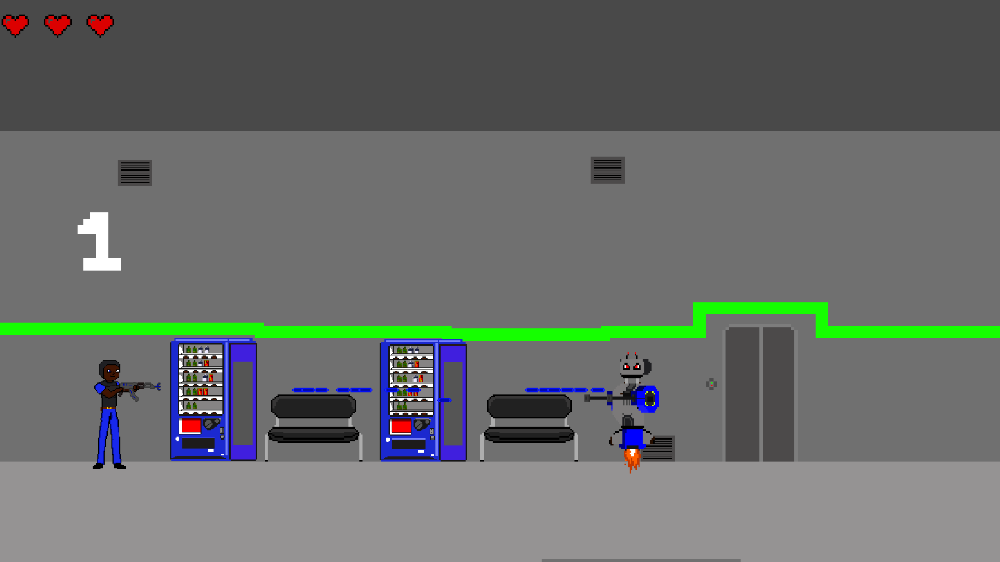

Sobre mim
Meu nome é Rafael Benício, atualmente moro na zona leste de São Paulo, no bairro do Itaim Paulista. Sou estudante de ADS pela Fatec, e estou trabalhando como jovem aprendiz de TI na Concentrix, com sede na Barra Funda. O meu próposito profissional é primeiramente, conseguir um estágio na área de desenvolvimento, e logo mais ir me desenvolvendo e conseguir um cargo de Junior, assim que terminar a faculdade. Pretendo continuar estudando após o término do 6 semestre, para ter um bom emprego e assim me estabilizar financeiramente.
Minhas habilidades
Meus projetos
Lista com meus projetos
Projeto 1
Jogo: Zeladores vs Robôs O jogo foi feito com o GameMaker Studio 2, utilizando a linguagem GML. Foi um projeto para o TCC de Programação de Jogos Digitais, concluído em 2022.